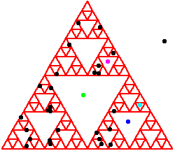

| 1. (i) Place an overhead transparency over the triangle template. Secure
the transparency to the template with tape. |
| (ii) Select one of the three sides of the triangle and select a starting point P0 anywhere on
that side. |
| (iii) Roll the die. |
(a) If 1 or 2 comes up, use the ruler to locate the point P1 half-way
between P0 and the lower left (1,2) corner of the triangle template. |
(b) If 3 or 4 comes up, use the ruler to locate the point P1 half-way
between P0 and the lower right (3,4) corner of the triangle template. |
(c) If 5 or 6 comes up, use the ruler to locate the point P1 half-way
between P0 and the upper (5,6) corner of the triangle template. |
| (iv) Repeat step (iii), using P1 to generate P2,
P2 to generate P3, and so on, until P30 is plotted. |
| (v) Repeat steps (i) - (iv), plotting 30 points on all 10 transparencies, or until
patience is exhausted. |
| (vi) Overlay the transparencies. Interpret the result. |
| 2. The chaos game rules are equivalent to the IFS rules for the equilateral gasket, and
we know the gasket is invariant under the rules that generate it.
(The example is a right isosceles gasket, but this invariance is a general result.) The sides of the equilateral
triangle belong to the gasket, so by starting with a point on a side, we are guaranteed that all
the points we generate lie on the gasket. |
| (i) For this problem, start with a point P0 outside the triangle and generate points P1 through P30 with
the rules of problem 1. After the points are generated, place the transparency over the gasket template.
Observe some of the points lie in the triangles removed in forming the gasket.
Here
is a sample solution. |
| (ii) On closer examination of the gasket overlay, note that exactly one point lies in the largest removed triangle,
exactly one point lies in the three next-largest removed triangles, exactly one point lies in the
nine next-largest removed triangles, and so on. Why is this? Here is the solution. |
|  |
| (iii) Suppose the base of the gasket has length 512 pixels, and suppose P1 lies inside the largest removed triangle. What is the smallest
integer N for which we can we be sure PN is indistinguishable from a point of the gasket? Here is the solution. |
| (iv) Must P1 lie in the largest removed triangle? Here is the solution. |